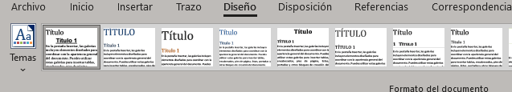
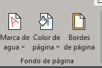
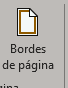
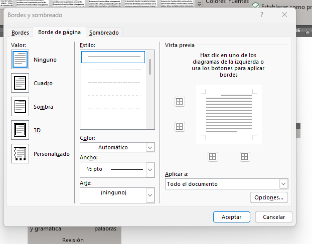
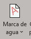
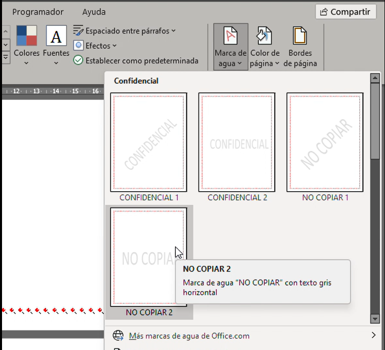

Como colocar margenes en Word
- Primero ve a la "pestaña Diseño"

- Ve a la caja de herramientas "Fondo de pagina"

- Selecciona la herramienta bordes de pagina

- Por ultimo selecciona el borde que más te guste

Como colocar marca de agua en Word
- Primero ve a la "pestaña Diseño"
- Ve a la caja de herramientas "Fondo de pagina"
- Seleciona la herramienta "Marca de agua"

- Selecciona la marca de agua que más te guste

Aqui puedes ver un documento
Puedes ver este video para comprender mejor
Para regresar al Inicio o puedes buscar temas relacionados al anterior
Inicio